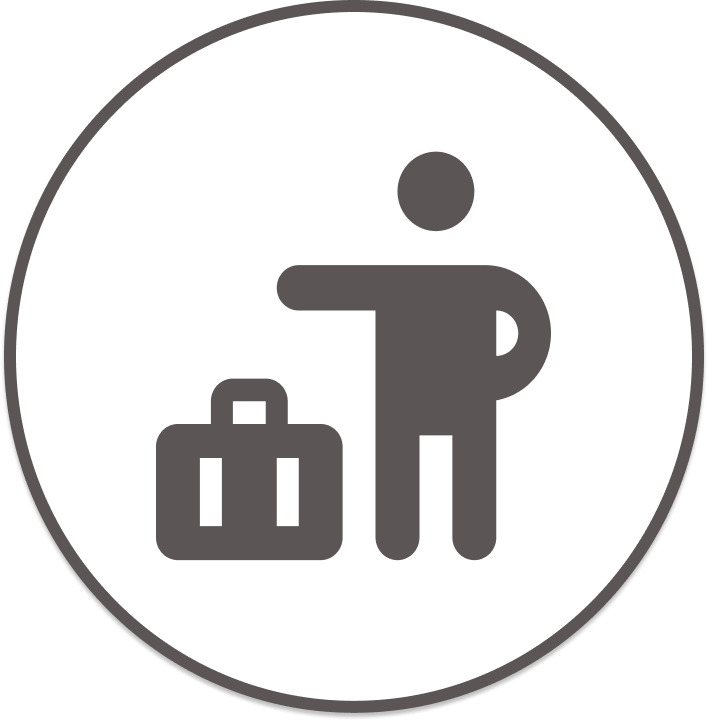
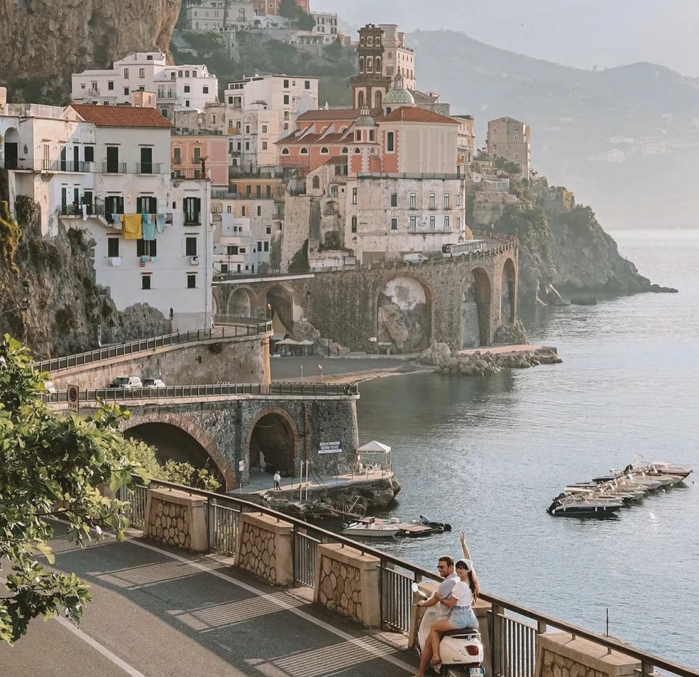

Самая заманчивая страна Европы, Италия, очаровывает посетителей потрясающей кухней,
разнообразной архитектурой, дивными пейзажами и искусством. Страна настолько полна и многообразна, что
может ошеломить туристов-новичков! Здесь можно совместить сразу всё: экскурсионку, пляжи, бюджетный отдых,
поездку на прокатном автомобиле или медленно идущем поезде с панорамными видами,
купание в горных озёрах. Всё, что нужно знать, чтобы получить максимальную отдачу от поездки, вы сможете найти на данном сайте!
|  |
С кем путешествовать? |
Все зависит от ваших предпочтений и, безусловно, можно отправиться в путешествие как в одиночку, так и с компанией – решать вам, но в вместе всегда веселее. В качестве компании вы можете позвать семью, близких, друзей или даже любых знакомых. Если вы точно решили, что хотите отправиться в путешествие в компании, но все ваши друзья и близкие заняты, то можно всегда также найти попутчика через интернет или спросить у знакомых |
|  Италия, Амальфи-Равелло.Фото: twitter.com |
Италия — страна «с картинки»к началу страницы |
Рим
Венеция
Неаполь
Милан
Есть страны, побывав в которых, ты уже не можешь туда не возвращаться вновь и вновь. Хотя бы в мечтах. Италия – одно из таких мест. Многим она напоминает изысканное блюдо, которое, сколько не пробуешь, открывается каждый раз с совершенно новой стороны. Поэтому и притягательно невероятно. Поэтому и хочется в эту страну возвращаться в который раз, чтобы раскрыть очередную тайну, приобщиться к неизведанным еще сокровищам, бережно хранящимся в ее самых потаенных уголках. Величественные горы и даже действующие вулканы, дремлющие долины и освежающие парки и леса, тихие озера и изумительной красоты фьорды, романтические горячие источники, материковые природные изюминки и приветливые экзотические острова. Все это и есть Италия! Таким образом, одной страницы точно не хватит, чтобы описать все причины, по которым стоит поехать в эту прекрасную страну, и на нашем сайте представлен лишь небольшой обзор четырх направлений и возможностей путешествий в них.